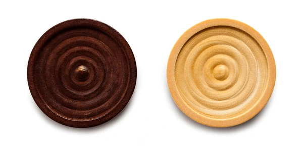
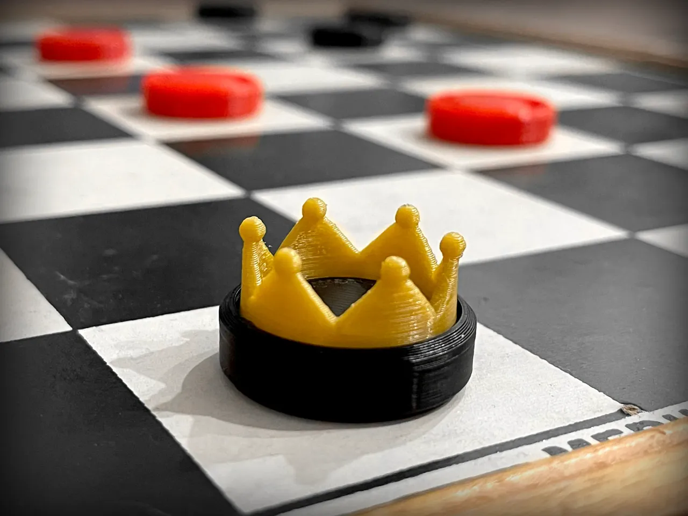

Checkers, also known as draughts, is a group of strategy board games for two players which involve forward movements of uniform game pieces and mandatory captures by jumping over opponent pieces. Checkers is developed from alquerque.The term "checkers" derives from the checkered board which the game is played on, whereas "draughts" derives from the verb "to draw" or "to move".
Checkers is played by two opponents on opposite sides of the gameboard. One player has dark pieces (usually black); the other has light pieces (usually white or red). The player with the darker color moves first, then players alternate turns. A player cannot move the opponent's pieces. A move consists of moving a piece to an adjacent unoccupied square. All pieces move forward only at the beginning of the game. At the beginning of a player's turn, if the adjacent square of a player's piece (in the player's forward direction) contains an opponent's piece, and the square immediately beyond it is vacant, the piece may be captured (must be captured in most international rules) by jumping over it.The captured piece is then removed from the board. Only the dark squares of the checkerboard are used. A piece can only move into an unoccupied square. When capturing an opponent's piece is possible, capturing is mandatory in most official rules. If the player does not capture, the other player can remove the opponent's piece as a penalty (or muffin), and where there are two or more such positions the player forfeits pieces that cannot be moved (although some rule variations make capturing optional). In almost all variants, a player with no valid move remaining loses. This occurs if the player has no pieces left, or if all the player's pieces are obstructed from moving by opponent pieces. Nowadays, checkers can be played online. It is common to play on various free apps found on the App Store and the Google Play Store.

An uncrowned piece (man) moves one step ahead and captures an adjacent opponent's piece by jumping over it and landing on the next square. Multiple enemy pieces can be captured in a single turn provided this is done by successive jumps made by a single piece; the jumps do not need to be on the same diagonal direction and may "zigzag" (change direction). In American checkers and Spanish draughts, men can jump only forwards; in international draughts and Russian draughts, men can jump both forwards and backwards.

When a man reaches the farthest row forward, known as the kings row or crown head, it becomes a king. It is marked by placing an additional piece on top of, or crowning, the first man. The king has additional powers, namely the ability to move any amount of squares at a time (in international checkers), move backwards and, in variants where men cannot already do so, capture backwards. Like a man, a king can make successive jumps in a single turn, provided that each jump captures an enemy piece. In international draughts, kings can move any number of squares, forward or backward. Kings with such an ability are also informally called flying kings. They may capture an opposing man, regardless of distance, by jumping to any of the unoccupied squares immediately past the man. Because jumped pieces remain on the board until the turn is completed, it is possible to reach a position in a multi-jump move where the flying king is blocked from capturing further by a piece already jumped. Flying kings are not used in American checkers; a king's only advantage over a man is the additional ability to move and capture backwards.